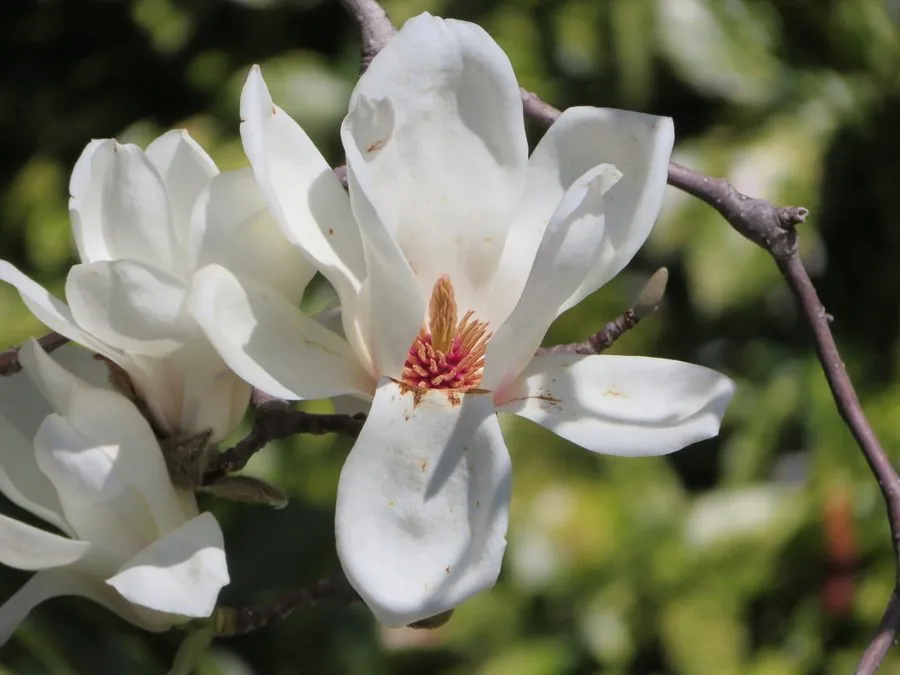

乔木 · 植物界
玉兰 Magnolia denudata

早春先花后叶的中国传统名花，花朵大而洁白、香气清雅，形似玉盏，是庭院与园林中常见的观赏乔木。
- 分类
- 门被子植物门纲木兰纲目木兰目科木兰科属木兰属
- 栖息环境
- 海拔 500–1000 米的山坡林缘与山谷，喜光耐寒，喜湿润肥沃土壤
- 地理分布
- 原产中国中部及长江流域，黄河流域以南各地广泛栽培
- 保护级别
- 暂无评估；中国未列入国家重点保护野生植物名录
物种志
玉兰为落叶乔木，高可达 15 m，树冠卵圆形，树皮灰白色而光滑；枝条粗壮，顶芽密被灰白色长毛。叶片倒卵形或宽倒卵形，先端突尖，全缘。花期 2–3 月，先花后叶，花朵单生于枝顶，直径 10–15 cm，花被片 9 枚、白色，基部常带淡粉，形似玉盏，芳香宜人；聚合蓇葖果圆柱形，成熟时裂开，露出红色种子。
玉兰原产中国中部及长江流域，栽培历史逾两千年，喜光、稍耐阴，耐寒，适宜深厚肥沃、排水良好的微酸性土壤。因其花大、色白、香雅，常被种植于庭院、寺庙与园林中，与海棠、迎春、牡丹并称“玉堂春富贵”。花蕾可入药，中药称“辛夷”，能散风寒、通鼻窍；花瓣可裹面油炸食用；木材可供细木工用，是中国多数城市的早春标志性观赏树。
形态与习性
- 株高可达 15 m，树冠卵圆形
- 花期2–3 月，先花后叶
- 果期9–10 月，聚合蓇葖果开裂
- 光照喜光，稍耐阴
- 水分喜湿润，怕积水
- 土壤微酸性、深厚肥沃的壤土
- 主要用途庭院观赏、花蕾入药（辛夷）、花瓣可食
趣味知识
- 玉兰先花后叶，早春满树白花如玉盏，花谢后才萌发新叶。
- 玉兰的花蕾是中药“辛夷”，具有散风寒、通鼻窍的功效。
- 玉兰与海棠、迎春、牡丹搭配，被古人合称为“玉堂春富贵”。
- 玉兰的花被片有 9 枚，外形像花瓣，其实并没有真正的花瓣分化。